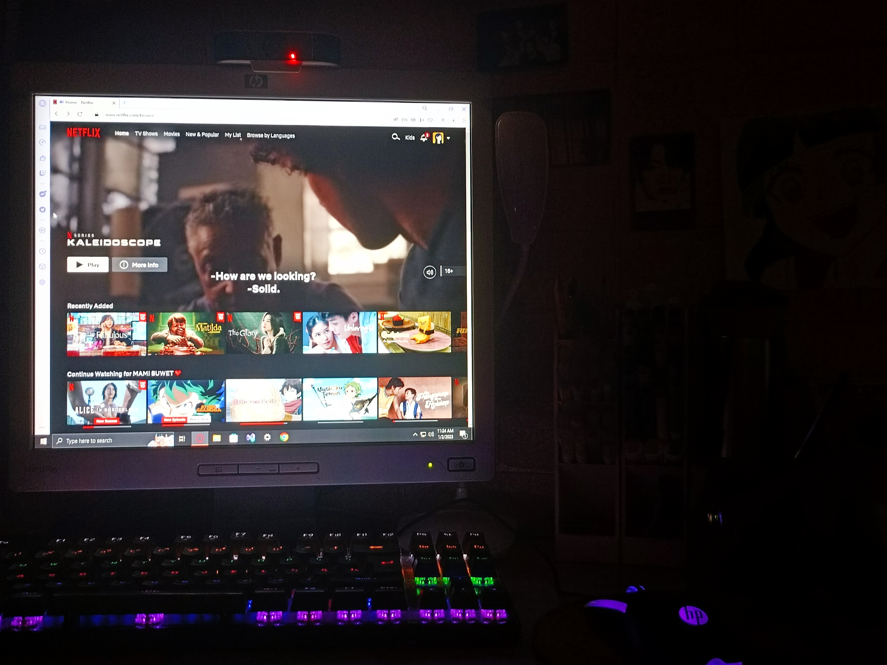
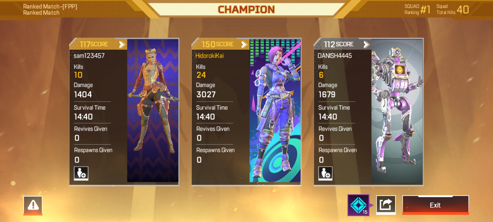

Introduction
Family Background
Hobbies
Skills/Talents
Strength and Weaknesses/ Career
Hobbies

My favorite hobbies are watching movies and playing online games
I like watching interesting movies and series on Netflix when I have free time or when I feel like I'm on the verge of breaking down.
I am currently watching Alice in Borderland Season 2, and the most fun and memorable series I watched was The Big Bang Theory and Lucifer.
I like playing online games like Call of Duty Mobile, Genshin Impact, Mobile Legends and Roblox but I usually play APEX Mobile nowadays.
